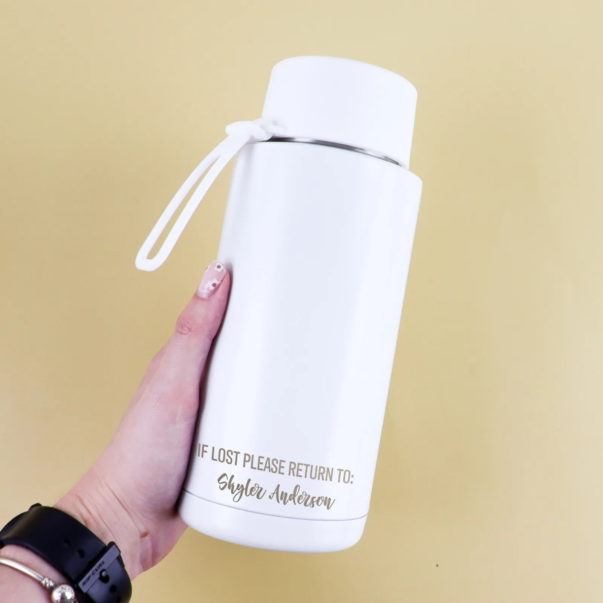
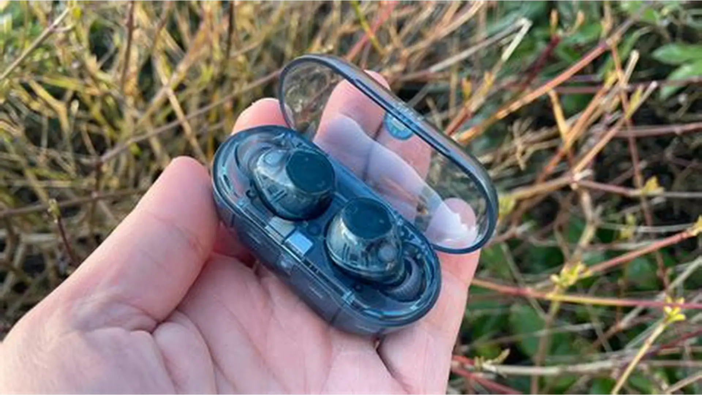

UVA FindIt
Official Lost & Found Management System for Uva Wellassa University of Sri Lanka. Recover your belongings and help fellow students by reporting items found on campus.

Campus Wide
Covers all university departments, hostels, and recreational areas.
Secure Recovery
Verified contact details to ensure items reach their rightful owners.
Quick Alerts
Real-time updates as soon as a new lost or found item is reported.
Examples of Lost Items




Recently Reported
Loading recently reported items...